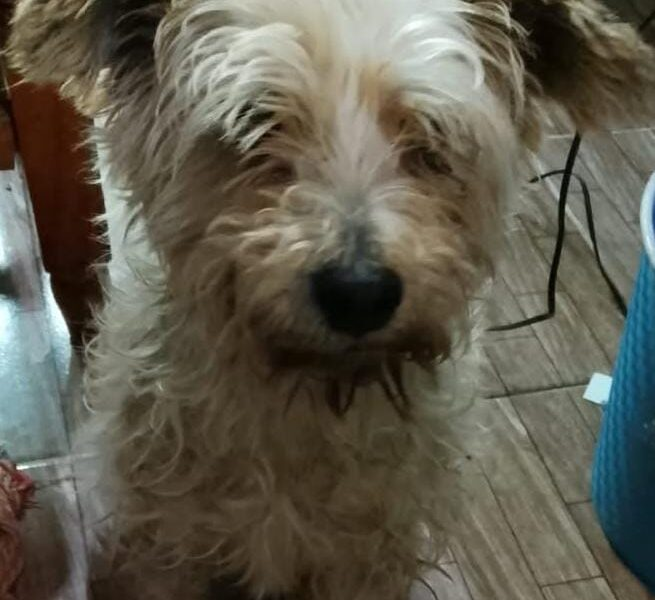
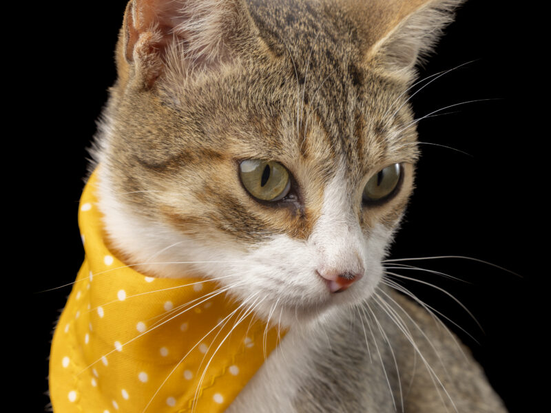
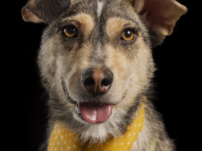
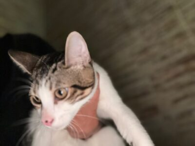

Mascotas Disponibles para Adopción
Conoce a los perros y gatos que actualmente están buscando un hogar amoroso y responsable. Todos están esterilizados, vacunados y desparasitados.

Algodoncito (Perro)
Edad: Adulto | Tamaño: Pequeño
Canelo es juguetón, cariñoso y se lleva muy bien con niños y otros perros.
Quiero Adoptar a Algodoncito
Trufa (Gato)
Edad: 1 año | Tamaño: Pequeño
Trufa es muy tranquila, ideal para departamentos o ambientes relajados.
Quiero Adoptar a Ronnie
Kira (Perro)
Edad: Cachorro | Tamaño: Mediano
Le encantan los paseos largos al aire libre.
Quiero Adoptar a Motita
Beto (Gato)
Edad: 2 meses | Tamaño: Pequeño
Muy curioso y activo. Le encanta jugar con pelotas de lana y trepar rascadores.
Quiero Adoptar a Penelope